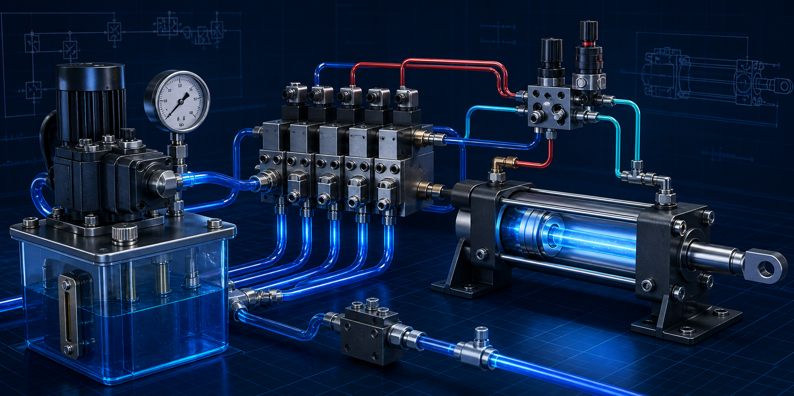

80% Examen
20% Trabajo en clase
20% Trabajo en clase

Diseñarás y analizarás circuitos para automatizar procesos, seleccionando actuadores y elementos de control e interpretando correctamente su simbología.
La evaluación diagnóstica identifica conocimientos previos y no forma parte de los porcentajes de los parciales.
10 preguntas sobre conocimientos previos de física, fluidos, electricidad y control. Una sola oportunidad; si abandonas después de comenzar, se registrará 0.
Aire comprimido, preparación, actuadores, válvulas, simbología, circuitos básicos y vacío.
Energía hidráulica, actuadores, válvulas, simbología, circuitos, cálculo y selección.
Circuitos combinatorios y secuenciales, espacio-fase, espacio-tiempo, cascada y GRAFCET.
Sensores, relevadores, temporizadores, electroválvulas y control eléctrico.